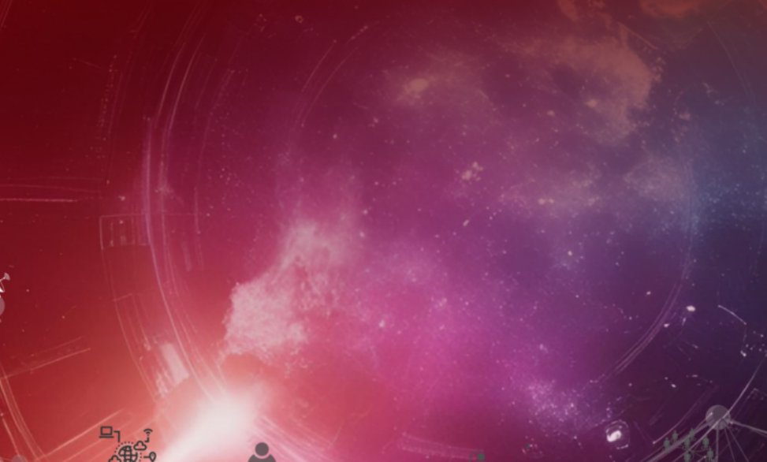
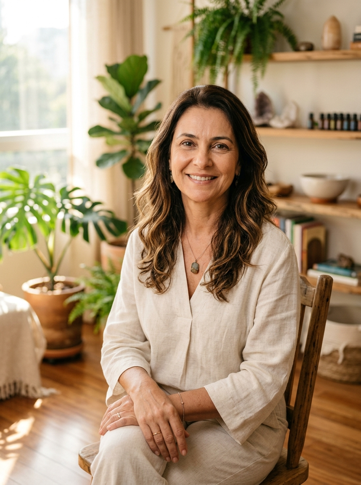
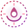

Dedicação ao cuidado humano e ao despertar do equilíbrio interior.
Conheça os valores, a sensibilidade e os fundamentos bioenergéticos que orientam cada atendimento realizado por Aureci Sena.


"Acolher com presença plena é o primeiro passo para o reequilíbrio."
Uma trajetória construída pela sensibilidade e pela escuta
Minha caminhada no universo das terapias holísticas nasceu da percepção de que muitas vezes as respostas que procuramos não estão na pressa do cotidiano, mas no silêncio, na pausa consciente e no reencontro com nossa vibração essencial.
Ao longo dos anos, venho aprofundando minha dedicação em modalidades integrativas reconhecidas pelo acolhimento gentil que proporcionam: a canalização suave de energia através do Reiki, a sabedoria sutil dos óleos essenciais na Aromaterapia, a harmonia dos Florais de Bach e a ancoragem no presente através de práticas meditativas.
Compromisso com a Sua Individualidade
Não existem fórmulas universais de cura. Cada pessoa traz um universo particular de sentimentos e desafios. Por isso, cada sessão é conduzida respeitando os limites, o tempo e as necessidades específicas de quem busca atendimento.
Meu compromisso fundamental é oferecer um espaço seguro onde você possa desacelerar, respirar livremente e ser acolhido(a) com respeito e profunda empatia.
O que fundamenta o cuidado holístico?
O termo "holístico" vem do grego holos, que significa "todo" ou "inteiro". Na prática com meus interagentes, isso se traduz em três pilares essenciais:
Tensões musculares, insônia e cansaço constante frequentemente expressam sobrecargas emocionais não processadas. O corpo fala quando não encontramos espaço para expressar o que sentimos.
Tudo na vida é vibração e fluxo. Quando criamos momentos de pausa consciente e aplicamos práticas de harmonização energética, o fluxo vital volta a circular com leveza.
A terapeuta não assume papel de autoridade sobre sua vida, mas de facilitadora. O maior objetivo é devolver a você a confiança e os recursos para nutrir sua própria saúde emocional e paz interior.
Valores Inegociáveis
Pronta(o) para iniciar esse caminho de autocuidado?
Ficarei imensamente feliz em te acolher e tirar todas as suas dúvidas sobre como podemos trabalhar juntos(as).